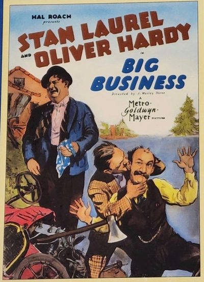

Big Business
Studio: Hal Roach Studios
Starring: Stan Laurel, Oliver Hardy, Jimmy Finlayson
Director: James W. Horne, Leo McCarey
Writer: H. M. Walker, Leo McCarey
Producer: Hal Roach
Big Business is a 1929 silent Laurel and Hardy comedy short subject directed by James W. Horne and supervised by Leo McCarey from a McCarey (uncredited) and H. M. Walker script.
Trivia
- Producer Hal Roach bought a vacant house at 10281 Dunleer Drive, Cheviot Hills, Los Angeles from a studio worker so he could destroy it in the film.
- According to Roach, a mistake was made regarding the address, and the cast and crew demolished the wrong house.
- The owners of that home happened to be away on vacation and returned just as filming was being completed.
Previous Showings
3 Runs • 1 Festival
Original Billings: 2 runs (April 21, 1929 - August 1, 1937)
Original Run: April 21 - 23, 1929 (Sunday - Tuesday)
All runs on record (3):
- April 21 - 23, 1929 (Sunday - Tuesday)Laurel & Hardy
- August 1, 1937 (Sunday - Tuesday)Jed Prouty, Spring Byington
- September 2, 2022Summer 2022w/ The General